Exchanging and Exporting
Projects are stored in the LemmaLoom library on your macOS device (refer to Where work is stored in Chapter 2, Getting Started). Work can be taken out of the library or put into the library via exporting or importing respectively. The choice of file type comes from who will access the exported file next.
All examples use the project called “Climate Debate”. The project contains eleven made-up opinion pieces written by climate activists and climate skeptics, such as “Running Out of Time” and “The Models Keep Missing”, along with the PDF document “Heat Wave Report 2024”, the web page “Carbon Tax Debate”, and the recording “Radio Debate”. “Running Out of Time (German)” is the translation of “Running Out of Time”, for a total of 15 documents. Following along with these examples requires selecting File ▸ Import ▸ Example Project. Upon importation, LemmaLoom will automatically create a new project entitled “Climate Debate” inside your library, already indexed and in the language of the interface.
Choosing a format
| You want to | File | Command |
|---|---|---|
| Back up a project, or move it to another Mac | LemmaLoom archive (.llz) | File ▸ Export ▸ LemmaLoom Project |
| Give a colleague a set or some documents with your coding | LemmaLoom archive (.llz) | File ▸ Export ▸ LemmaLoom Set or LemmaLoom Document |
| Import an archive | LemmaLoom archive (.llz) | File ▸ Import ▸ LemmaLoom Archive |
| Pass a project to software that supports the REFI-QDA standard | REFI-QDA project (.qdpx) | File ▸ Export ▸ REFI-QDA Project |
| Open a project made in such software | REFI-QDA project (.qdpx) | File ▸ Import ▸ REFI-QDA Project |
| Share a code system without any documents | REFI-QDA codebook (.qdc) | File ▸ Export ▸ REFI-QDA Codebook and File ▸ Import ▸ REFI-QDA Codebook |
| Work on numbers in a spreadsheet or statistics program | CSV | The export button of the table |
| Put a chart or diagram in a paper or on a slide | PNG or PDF | The export button of the chart |
| Keep a query result with a record of how it was made | Markdown | The export button of the query result |
You would typically opt for LemmaLoom archive export whenever the materials continue to remain inside LemmaLoom, whether that means keeping backups yourself, moving your work to another Mac, or passing along LemmaLoom documents to a colleague who uses LemmaLoom. An archive keeps the indexing, the saved queries, and the tie between a translation and its original, so the material is ready to use right after import. When your work moves in or out of LemmaLoom (either originating somewhere else or destined somewhere else), then you’ll want to use a REFI-QDA project instead. This will retain none of the LemmaLoom indexing structure or any of the functionality derived from it.
File ▸ Import ▸ REFI-QDA Codebook and everything listed under File ▸ Export work on the active project (bolded in the navigation sidebar). These options will all appear disabled until you select a project.
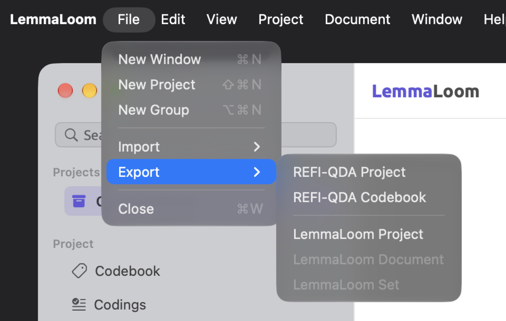
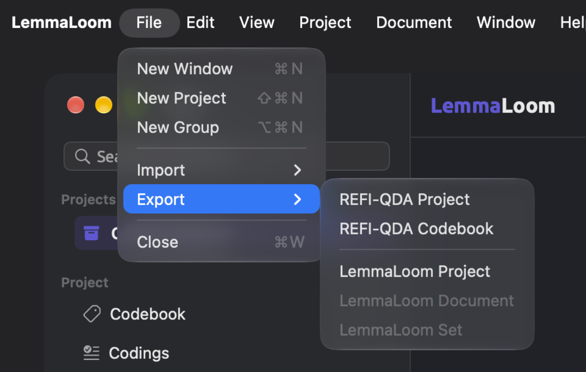
Alternatively, you could import .llz, .qdpx, or .qdc files by double-clicking them in the Finder. Doing so will launch LemmaLoom if it hasn’t been started already. A project archive and a REFI-QDA project each become a new project. If you are importing a codebook, set archive, or document archive, it will be imported into the active project, so make sure the right project is active. If you have conflicting programs opening .qdpx or .qdc files on a Mac, you may alternatively right-click a file and choose Open With ▸ LemmaLoom.
Key terms
- A LemmaLoom archive is an export file containing either a complete project, a set, or a selection of documents together with all their LemmaLoom data, such as indexing and recordings.
- REFI-QDA is an open data exchange format for transferring projects from one qualitative analysis program to another. The format handles documents, codes, codings, memos, links, variables (LemmaLoom attributes), and sets within projects.
- Scope is the source of an archive (a whole project, one set, or documents you selected) and determines what will be archived and how archives are imported.
- Archives of sets or selected documents match the groups, codes, and attributes present in the receiving project based on their names. The matching is performed during importing.
The exchange dialog
Import and export of REFI-QDA files and LemmaLoom archives occur through a dialog, which is attached to the top of the main window. Once you choose a file, or double-click one in the Finder, the dialog appears instantly.
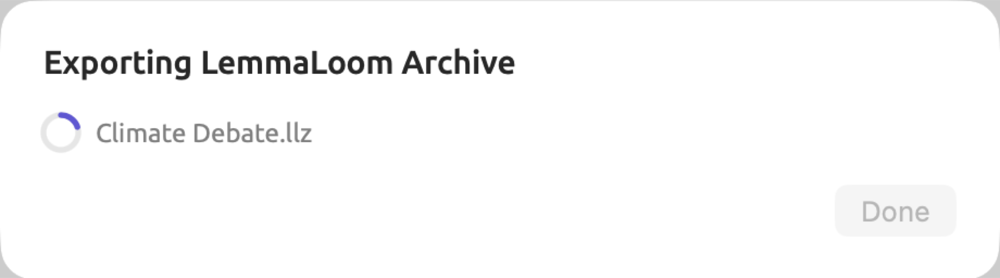
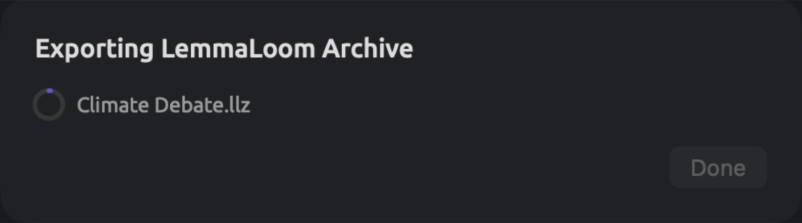
The dialog will display a title such as Exporting LemmaLoom Archive, the filename being exported/imported, and a ring that gradually gets filled according to the progress made during import/export operations. For exports of REFI-QDA projects and codebooks, and for imports of codebooks, a spinner replaces the ring icon. Import/export time mostly depends on project size and recording size.
An exchange operation cannot happen simultaneously with another exchange operation. Before completion of such operations, all commands related to importing and exporting REFI-QDA files/archives get disabled, both in the File menu and in the sidebar. The Activity window lists the currently running exchange under the Importing or Exporting category. For a detailed description see The Activity window in Chapter 4, Importing Material.
Upon completion of the export operation, the dialog displays a new title, for example LemmaLoom Archive Exported. Until the exchange finishes, Done remains disabled and hovering the mouse pointer over it reveals Running. Click Done to close the dialog.
Upon completion of the import operation, the dialog automatically closes. A project contained in an archive/REFI-QDA file will become the active project; newly imported documents and codes appear in the receiving project.
Should anything go wrong during import/export operations, the dialog will stay open. It would display a failure message in the title (Import Failed or Export Failed), followed by the file’s name and a reason. Such reasons include the following:
| Message | What it means |
|---|---|
| The file isn’t a REFI-QDA project. | The .qdpx file contains no project description. It may be damaged, or have been renamed from another kind of file. |
| The file isn’t a REFI-QDA codebook. | The .qdc file is not a codebook. |
| The file isn’t a LemmaLoom archive. | The .llz file was not written by LemmaLoom, or it is damaged. |
| This archive was made by a newer version of LemmaLoom. | Update LemmaLoom, then import the archive again. |
| Open a project to import into. | The file holds a codebook, a set, or documents, which go into an existing project, and no project was active. Click a project in the sidebar and try again. |
| The file isn’t a valid archive. or The archive is damaged. | Every .qdpx and .llz file is a ZIP file, and this one is incomplete or damaged. Copy it again from its source. |
| The archive uses a format LemmaLoom can’t read. | The ZIP file is protected by a password, or compressed with a method other than the usual Deflate. Export it again from the other program without a password. |
| The library isn’t available. | LemmaLoom could not reach its library or the project. Wait until the sidebar lists your projects, then try again. |
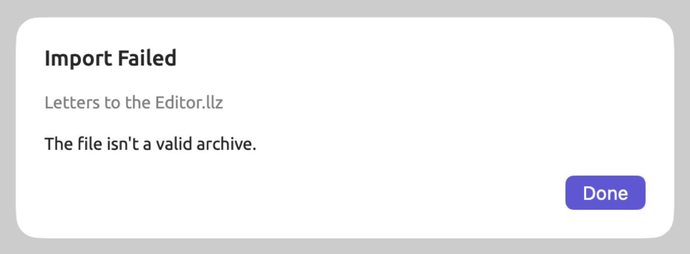
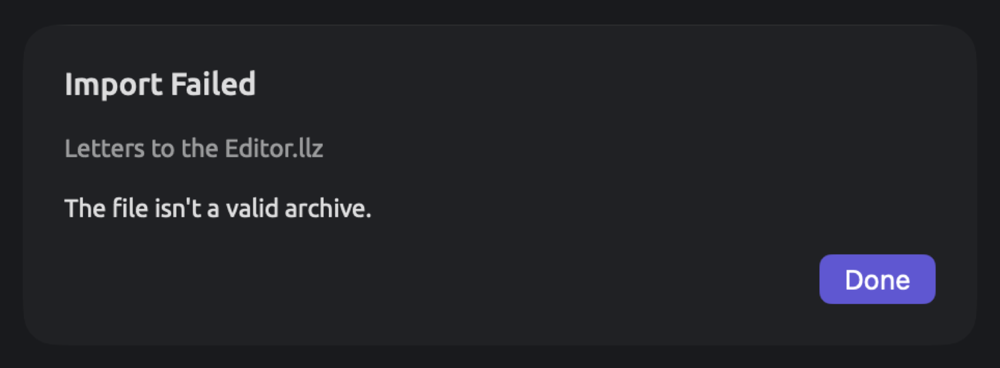
Click Done to close the dialog. If LemmaLoom is unable to export your files successfully, the incomplete file will be deleted. If you chose to replace an existing file, the file you were replacing is at risk as well.
LemmaLoom archives
Archives are useful when backing up your projects prior to deleting them, transferring your project to another machine, or sharing parts of it with colleagues that use LemmaLoom too. Only archives retain LemmaLoom’s indexing and your saved queries.
What an archive contains
Regardless of the scope involved, an archive contains the following for each document:
- the document’s text as edited, and for audio and video documents the transcript with its speakers and times, and a copy of the recording;
- the document’s metadata including its properties, color, tags, and attribute values for the project;
- its indexing including sentences, words, lemmas, parts of speech, sentence trees, along with results produced by built-in and custom analyzers (see Chapter 21, Analysis and Indexing);
- its codings, bookmarks, and memos;
- its translations, which themselves include text, indexing, and codings.
The rest depends on the scope. A code may be limited to a single document or set (see Where a code can be used in Chapter 7, Coding); such codes are referred to below as limited.
| Content | Project | Set | Selected documents |
|---|---|---|---|
| Documents | All documents of the project | The set’s documents, and their translations | The selected documents, and their translations |
| Codes | All codes, with their memos | The codes that the archive’s codings, memos, and queries use, codes limited to one of its documents or to the set, and the parents of all these, with their memos | The codes that the archive’s codings, memos, and queries use, codes limited to one of its documents, and the parents of all these, with their memos |
| Code sets | All | None | None |
| Links | All | Links whose two ends both lie in the archive’s documents | As for a set |
| Groups | All | The groups of the archive’s documents, and groups named in the set’s conditions | The groups of the archive’s documents |
| Sets | All sets and smart sets | The exported set, with its conditions if it is a smart set | None |
| Attributes | All | All except those defined on a code the archive leaves out, with the values of the archive’s documents, codings, and memos | As for a set |
| Dictionaries | All | None | None |
| Saved queries | Those saved for the project, its sets, its tags, or its documents | Those saved for the project, for the set, or for one of its documents | Those saved for the project or for one of the documents |
| Custom analyzers | Those whose findings are stored with the documents, those an included query uses, and those generated from an included query | As for a project | As for a project |
| The project’s name, color, tags, and project memos | Yes | No | No |
Queries with Available In set to All Projects will be part of your library and travel only along with a copy of your complete library (refer to Saving queries in Chapter 15, Building a Query). How queries and analyzers travel is explained in greater detail in Queries in LemmaLoom archives in Chapter 18, Using Query Results.
Exporting a project
- In the sidebar, click the project, for example “Climate Debate”.
- Choose File ▸ Export ▸ LemmaLoom Project.
- The save dialog suggests the project’s name,
Climate Debate. Change it if you like, choose a folder, and click Save. - When the dialog reads LemmaLoom Archive Exported, click Done.
The archive file is named Climate Debate.llz. For importing and restoring the project, follow the steps explained in the section on Importing an archive later in this chapter.
Exporting a set
A set archive exports a portion of a project with the codes it uses. For instance, the set “Activists” within the “Climate Debate” project contains the six activist documents.
- In the Sets section of the sidebar, click the set, for example “Activists”.
- Choose File ▸ Export ▸ LemmaLoom Set, or right-click the set and choose Export.
- The save dialog suggests the set’s name. Choose a folder, and click Save.
- When the dialog reads LemmaLoom Archive Exported, click Done.
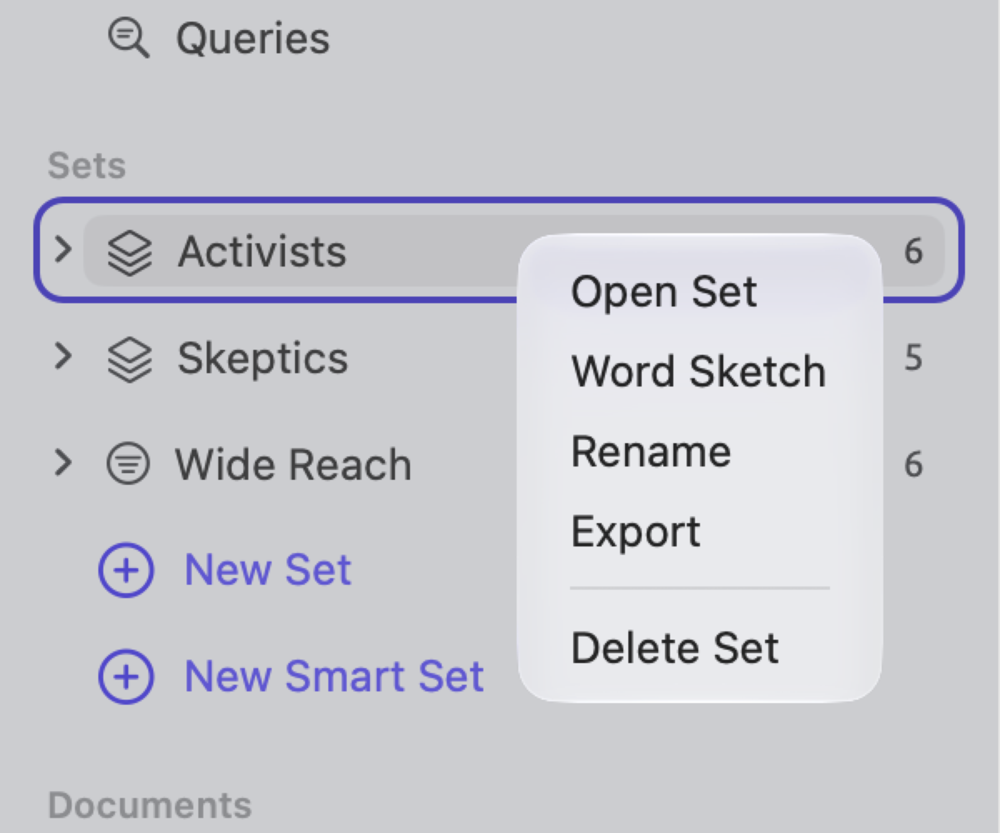
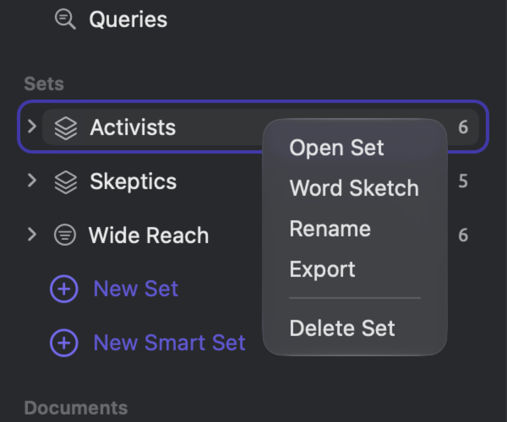
File ▸ Export ▸ LemmaLoom Set exports the current set highlighted in the navigation sidebar, or the set open in the active tab.
An archive is packaged up with all the set’s documents, including their translations. This means that for “Activists”, you get seven documents, the six activist texts and “Running Out of Time (German)”, which is a translation of one of the documents in that set. The set archive excludes code sets, dictionaries, and any codes except those listed above. If your colleague needs your complete coding scheme, send a codebook export in REFI-QDA format as well (see REFI-QDA codebooks further ahead in this chapter).
A smart set exports with the documents meeting its conditions at the point of export, along with these conditions. Upon receipt in another project, the smart set will reapply its conditions to all documents in the project, making it possible that more documents match than when first exported. Exported from “Climate Debate”, the smart set “Wide Reach”, which collects documents where “Readership” is greater than or equal to 100,000, arrives with its six documents, plus “Running Out of Time (German)”, whose original is among the six documents. With a colleague’s project featuring a “Readership” attribute, this smart set collects her documents with a value greater than or equal to 100,000 too.
When passing on all the documents with a tag, you first click the tag in the Tags section to view which documents carry it, then select them in the Documents section before exporting as described next.
Exporting documents
Export individual documents if you wish to share just a few texts with a coworker for a one-off purpose, like a second reading of three skeptic texts. If your documents should arrive as a named collection, then export a set, because your archive then carries the set along.
- In the Documents section of the sidebar, click a document. To export several, ⌘-click each of the others, or ⇧-click to select a run of them.
- Choose File ▸ Export ▸ LemmaLoom Documents (or LemmaLoom Document for one), or right-click one of the selected documents and choose Export.
- The save dialog suggests the document’s title, or for several documents the project’s name. Choose a folder, and click Save.
- When the dialog reads LemmaLoom Archive Exported, click Done.
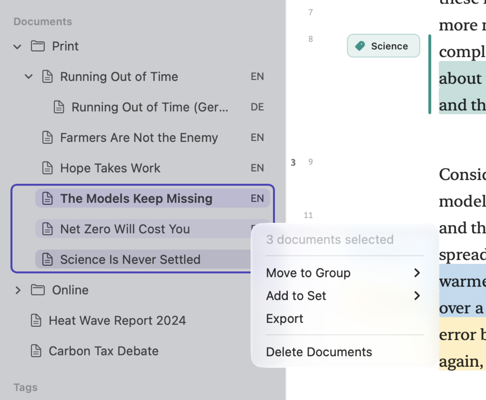
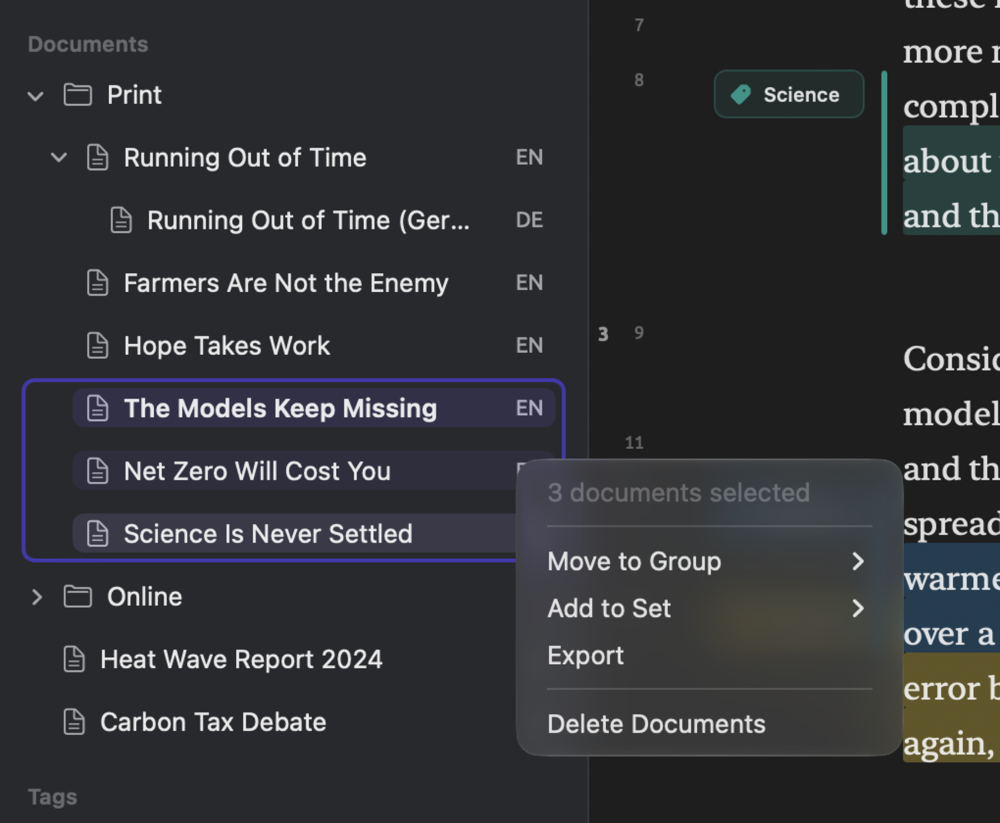
If no document is selected in the sidebar, then File ▸ Export ▸ LemmaLoom Document will export the document in the active tab.
Exporting an original document includes all of its translations too. As such, exporting “Running Out of Time” will also export “Running Out of Time (German)”. When you export a translation alone, it arrives as a regular document along with its content and codings.
Importing an archive
Archive import actions differ based on the archive’s scope:
- Project archive imports will become a new project using the imported project’s properties, including name, color, and tags, regardless of what the active project may be.
- Set or documents archive imports will import the archives into the currently active project. No active project results in failure with the message Open a project to import into. If you don’t have any projects yet, create a blank one first (see Creating a project in Chapter 2, Getting Started).
To begin importing an archive:
- For an archive of a set or of documents, click the project that should receive it in the sidebar. For a project archive, skip this step.
- Choose File ▸ Import ▸ LemmaLoom Archive.
- Choose the
.llzfile and click Open.
Alternatively, double-clicking the .llz file inside the Finder will import the archive the same way as the previous method. Reimporting the exact same project archive results in two projects having the exact same name, which means you should rename one of those projects (refer to The project’s shortcut menu in Chapter 3, Projects and Documents).
The imported documents come indexed right away and are ready for lenses, the grammar inspector, and queries. LemmaLoom then checks the library in the background and indexes only the missing items (refer to Chapter 21, Analysis and Indexing). Recordings are copied into the library as well.
When wanting to get rid of everything imported via an archive import operation, delete the newly created project. With set/documents archives, delete the imported documents and set (see Deleting documents in Chapter 3, Projects and Documents), then any codes, groups, and/or attributes the import added, such as “Adaptation” in the example below.
Moving a project to another Mac
- On the first Mac, click the project in the sidebar and choose File ▸ Export ▸ LemmaLoom Project.
- Copy the
.llzfile to the other Mac, for example with AirDrop or on an external drive. - On the other Mac, double-click the file in the Finder, or choose File ▸ Import ▸ LemmaLoom Archive, choose the file, and click Open.
- Open a few documents and check that codings, memos, and recordings are there.
- If you no longer need the project on the first Mac, delete it there.
Queries with Available In set to All Projects are stored within the library. Copying an entire library copies all of your projects and queries therein at once; please consult Where work is stored in Chapter 2, Getting Started for further instructions.
How an archive joins an existing project
When a set or documents archive is brought into an existing project, its documents are added and linked to what exists in the project where there are matching names.
- Documents are added regardless of duplication of titles within the importing project; thus, re-importing an archive leads to duplicates of the documents.
- Group matching occurs based upon names while ignoring differences of upper/lower cases and whitespace around names. The documents inside a matched group are moved into the destination group.
- The matching occurs between codes of the same name residing in the same parent code without regard to upper/lower cases and surrounding whitespaces. Any codings, memos, or queries referring to the code are automatically changed to refer to the code of the importing project. The descriptions and colors of the codes remain as they are in the destination project, whereas the imported memos associated with the code are merged into it. Attribute match-ups take place between attributes with matching names within the code. A limited code is always added; if its document or set is not in the archive, it arrives as a code of the whole project.
- Attributes are matched by name. The attribute type of the destination project dominates when there are differences. Conversion of values according to the types happens, and unconvertible values are discarded.
- Sets are always added, regardless of whether a set of the same name already exists within the project, resulting in duplication. The conditions of the imported smart set are transformed in accordance with value conversions.
- Saved queries are added; the queries are tied to the document/set/tag they were saved for.
- Custom analyzers are universal among projects, and new ones are added and reside inside Window ▸ Analyzers.
Importing a colleague’s set
Consider the situation where your colleague, who has been researching the same debate you have, sends you Letters to the Editor.llz, which contains a set of four letters from her own project. Click “Climate Debate” in the sidebar and import the .llz file. The table below summarizes the impact on the archive’s group, codes, attribute, and set.
| In the archive | In “Climate Debate” | Result |
|---|---|---|
| Group “Print” | Group “Print” | The letters from “Print” join the existing group. |
| Code “deadlines”, under “Urgency” | Code “Deadlines”, under “Urgency” | Matched, since matching ignores case. Her codings now use your “Deadlines”. |
| Code “Fear”, at the top level | Code “Fear”, under “Emotions” | Kept apart, because the parents differ. A new top-level code “Fear” is added. |
| Code “Adaptation” | No such code | Added. |
Attribute “Readership”, type Text, with the values 120000, 45000, 310000, and about 80000 | “Readership”, type Integer | The values 120000, 45000, and 310000 arrive as numbers. about 80000 is text, so it is left out, and that letter’s “Readership” stays empty. |
| Set “Letters to the Editor” | No such set | Added, with the four letters. |
Now, “Climate Debate” contains 19 documents, while your codebook includes two codes entitled “Fear” appearing at separate points. The letters with 120,000 and 310,000 readers also join “Wide Reach”, giving it eight total. If both codes mean the same thing, merge them according to Merging codes in Chapter 7, Coding. Fill out the missing “Readership” figure in Document Properties.
The archive file
A .llz file is a ZIP file. Unzipping it allows you to view its contents manually.
An archive will import into the version of LemmaLoom that generated it or newer versions thereof (refer to The exchange dialog earlier in this chapter). If you plan on exchanging archives with your colleagues, it’s helpful for everyone to stay updated to the latest version of LemmaLoom.
REFI-QDA projects
REFI-QDA project files (.qdpx) are ZIP files containing a project descriptor called project.qde (XML), along with documents kept in a directory named sources. Project files allow you to share your projects with anyone whose software supports the REFI-QDA format, and to load such a colleague’s project into LemmaLoom.
LemmaLoom-specific data such as indexing, saved queries, dictionaries, and analyzers travel only in a LemmaLoom archive.
Some common elements use distinct terminology under the REFI-QDA standard:
| REFI-QDA | LemmaLoom |
|---|---|
| Source | Document |
| Selection | A passage, usually one that is coded |
| Note | Memo |
| Variable | Attribute |
| Case | LemmaLoom writes one unnamed case per document, holding its attribute values; a named case from another program becomes a set. |
| Set | A set of documents, or a set of codes |
Exporting a REFI-QDA project
- In the sidebar, click the project, for example “Climate Debate”.
- Choose File ▸ Export ▸ REFI-QDA Project.
- The save dialog suggests the project’s name. Choose a folder, and click Save.
- When the dialog reads REFI-QDA Project Exported, click Done.
Your file name is Climate Debate.qdpx. When looking for your import command, check for either REFI-QDA or QDPX in the other program.
LemmaLoom saves your project like so:
| In LemmaLoom | In the .qdpx file |
|---|---|
| Text, PDF, and web page documents | Text sources holding the documents’ current text |
| Audio and video documents | Audio or video sources with the recording and the transcript. The transcript’s timing is written as sync points, so codings stay tied to their place in the recording. |
| Translations | Sources of their own: text sources for translated text, and audio or video sources with their own copy of the recording for translated recordings. |
| Authors, date, publication, publisher, URL, and DOI | The source’s description, one line per field, with the field names in the language of the interface, such as Date: 2024-08-21 |
| Codes, with their hierarchy, colors, and descriptions | The codebook |
| Codings | Coded selections, with the date each coding was made |
| Memos on a passage | Notes on the selection |
| Coded memos (see Coded memos in Chapter 7, Coding) | Notes on the coding of the same code on that passage, or on the selection if the passage has no such coding |
| Memos on a whole document, on a code, or on the project | Notes on the source, the code, or the project |
| Links | Links between selections, with their colors. The relation becomes the link’s name, and the comment a note. |
| Attributes | Variables. A Picker becomes a plain text variable. |
| Attribute values | One case per document, holding that document’s values |
| Sets and smart sets | Sets of sources. A smart set is written with the documents it holds at the time of export. |
| Groups | Sets of sources, named after the group |
| Code sets | Sets of codes |
The file omits:
- Indexing and everything built on it, such as text statistics and word sketches (LemmaLoom will index the imported documents again);
- Saved queries, lenses based off the queries, dictionaries, custom analyzers, and bookmarks;
- Tags assigned to documents, codes, memos, and links;
- Document colors and languages, names of speakers in transcripts, and attribute values assigned to codings and memos;
- The connection between a translation and its original;
- The scope limitation of a code to a particular document or set, meaning that all such codes will become project codes upon import;
- The Format of a code, meaning that all codes will use Highlight upon import;
- Recordings exceeding 2 GB in size; such a document will be saved as a text source including only its transcript.
The exported file records you as its author, under the full name of your macOS user account. The application LemmaLoom and its exact version are saved as well, as the creator of the project.
Importing a REFI-QDA project
- Choose File ▸ Import ▸ REFI-QDA Project.
- Choose the
.qdpxfile and click Open. - When the import has finished, open two or three documents and check that the codings sit on the words they were made on.
Double-clicking a .qdpx file within the Finder imports it in the exact same fashion. Importation creates a new project every time. It uses either the name within the file, if there is any, or just the file name. This newly created project will be the active project, and its documents get indexed in the background. You may monitor indexing progress via the Activity window. If need be, you may repeat the process by deleting the project and re-importing the .qdpx file.
LemmaLoom reads the file as follows:
In the .qdpx file | In LemmaLoom |
|---|---|
| Text sources | Documents with the source’s text. Formatting in rich text sources is dropped. |
| PDF sources | Documents with the PDF’s text, from the text version the other program stored, or else read from the PDF itself |
| Audio and video sources with a transcript | Audio or video documents. The transcript becomes the text and its sync points become timed passages. The recording is copied into the library if the file contains it. |
| Audio and video sources without a transcript, picture sources, and sources without any text, such as a scanned PDF without a text layer or a source the file refers to but does not contain | Left out |
| A source’s description | The document’s authors, date, and other properties, if the description is in the form LemmaLoom exports, with the field names in English or in the language of your interface; otherwise a memo on the document |
| Codes | Codes for the whole project, with their hierarchy, colors, and descriptions |
| Codings of selections | Codings of the same passages, with their dates |
| A coding of a whole source | A coding of the document’s entire text |
| A selection’s description | A memo on the passage |
| Notes | A note on a selection becomes a memo on the passage, and a note on a coding a coded memo. Notes on a source or a code become memos on the document or the code. A note that belongs to nothing becomes a project memo, and a note on a link the link’s comment. |
| Links between selections | Links. The link’s name becomes the relation. |
| Variables | Attributes. Integer becomes Integer, Float Decimal, Boolean Boolean, Date and DateTime Date, and anything else Text. |
| Cases | Their values go to the documents that belong to them. A named case also becomes a set of those documents. |
| Sets | Sets of documents and code sets |
If there is an unnamed source, the title will become Imported document. When documents are missing after an import from another application, re-export the project from there and ensure the sources have been included in the exported file.
The language of each document is determined based on its content. Incorrect determination can be fixed manually via Document Properties; LemmaLoom will then re-index the document according to the selected language (see Indexing in Chapter 3, Projects and Documents).
Since LemmaLoom can only code text, any codings for areas within a PDF file page or image are discarded.
Selections are stored with references to where they begin and end, both measured in number of characters, usually along with an excerpt from the text within the selection. Different programs compute the character count differently; in some cases, a line break is counted as two characters. LemmaLoom attempts each common method and keeps the one in which the largest percentage of excerpts correspond correctly.
REFI-QDA codebooks
A REFI-QDA codebook file (.qdc) contains nothing more than a collection of codes, with their hierarchy, colors, and descriptions, and the code sets.
Exporting a codebook
- In the sidebar, click the project.
- Choose File ▸ Export ▸ REFI-QDA Codebook.
- The save dialog suggests the project’s name. Choose a folder, and click Save.
- When the dialog reads REFI-QDA Codebook Exported, click Done.
The codebook contains every single one of your codes organized hierarchically. Any code set containing codes will appear alongside its codes. A code restricted to one document or set is written like any other, without its restriction, and comes back as a code of the whole project.
Importing a codebook
Imported codes go into the active project.
- In the sidebar, click the project that should receive the codes.
- Choose File ▸ Import ▸ REFI-QDA Codebook.
- Choose the
.qdcfile and click Open.
Double-clicking the .qdc file in the Finder will import the file similarly.
For every code in the imported file, LemmaLoom searches among the siblings under the same parent for a matching code name regardless of capitalization. Should there be a match, the matching code is used, and the search proceeds with its children. Should there be no matches, a new code is created with its properties taken from the imported file. Matching code sets is performed in the same manner, adding to the matching code set the codes from the file that are new to it.
Importing the file is performed in one undo step. By selecting Edit ▸ Undo REFI-QDA Codebook or pressing ⌘Z, all added codes and code sets are undone, and the added codes are taken out of existing code sets.
Importing a research group’s codebook
For example, suppose a research group sends Climate Rhetoric.qdc, which has a code “Science” with the children “Uncertainty” and “Consensus”, a top-level code “Irony”, and a code set “Arguments” holding “Uncertainty” and “Consensus”. If it is imported into “Climate Debate”, LemmaLoom would make changes to the codebook as follows:
- The top-level code “Science” along with its child “Uncertainty” already exists within “Climate Debate”.
- The child “Consensus” of “Science” would be imported alongside “Uncertainty”.
- The top-level code “Irony” would be imported alongside the existing top-level codes.
- The code set “Arguments”, which contains the codes “Science”, “Uncertainty”, “Costs”, and “Responsibility”, would gain the new code “Consensus”.
Exporting tables and charts
Most tables may be exported as CSV files, while most charts and diagrams may be exported as PNG or PDF images.
The export button
The export button resembles a square with an arrow pointing upwards. This button appears in the heading of the table/chart, in the header of views on the project shelf, or in the bar of word sketches. The export button functions in either one of two ways:
- When beside a table not attached to any chart, clicking the button immediately opens the save dialog for a CSV format file. Hovering the mouse pointer over the button reveals Export as CSV.
- When beside a chart/diagram, clicking the button opens a menu showing PNG, PDF, and then CSV in cases where the chart has a table behind it. When hovered over, the button displays Export. Structure diagrams and the Mosaic are able to export PNG and PDF only.
This button becomes visible upon the presence of anything that can be exported. In the Codings, Memos, and Links views of the project shelf, as well as in Relations and the word sketches’ bars, the button remains visible all the time. In these places, when there isn’t anything available for exporting, the button is disabled, showing Nothing to export. Inside the Attributes window and the Diagram window (see The Diagram window in Chapter 11, The Grammar Inspector), the button carries the word Export.
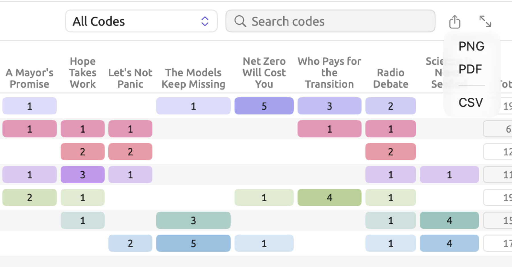
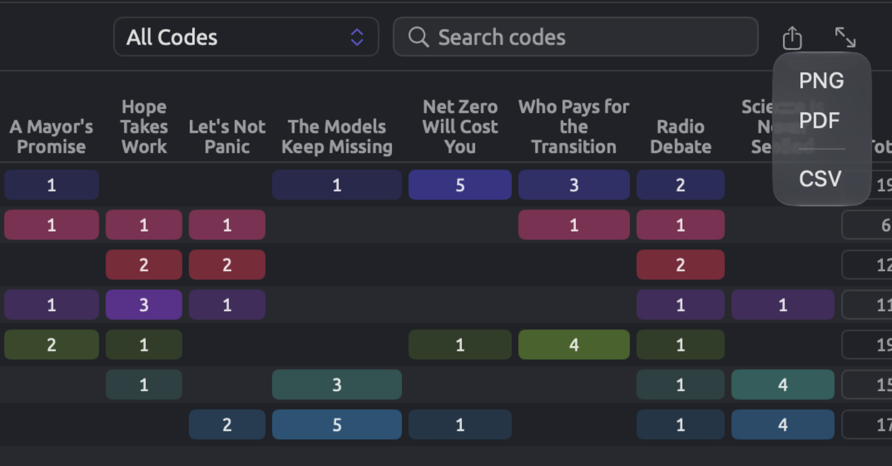
Exporting involves:
- Set up the view as you want it, with the codes, filter, search, and display you need.
- Click the export button, and choose a format if a menu opens.
- Change the suggested name if you like, choose a folder, and click Save.
Suggested file names join the document, set, or project to what is exported, such as Running Out of Time-codings or Climate Debate-code-matrix. In some cases where grammar views are concerned, however, the file name reflects whatever word you searched on; e.g., collocates-climate or word-sketch-climate regarding the word climate.
Your export will consist of everything visible in the view. Any search or filter conditions will transfer over, including the tag filter in your codebook and the Filter field of a query result. Disabled sectors in Sketch Space and your selected display are preserved as well.
CSV files
A CSV file is a plain text file with comma-separated values. Each row has one value per column, separated by commas. The very first row contains the names of the columns in the language of the interface. The CSV file can be consumed by spreadsheet and statistical analysis applications.
LemmaLoom exports its CSV files using the following formatting rules:
- All text in the file is UTF-8 encoded, beginning with a byte order mark so that spreadsheet applications will recognize the encoding.
- All numbers have plain digits and a decimal point, regardless of the locale you have chosen on your Mac computer, e.g.,
1234.5. Columns whose name ends with (%) contain percentages represented numerically as portions of 100, e.g.,12.35for 12.35%. - Any cell containing commas, double quotes, or line breaks, or leading or trailing spaces is enclosed by double quotes to meet the standard for CSV formatting.
- Any cells starting with
=,+,-, or@which cannot be parsed as numbers are prefixed with an apostrophe so that spreadsheet applications will not interpret the value incorrectly, such as taking a memo like+ check the figures against the reportfor a formula.
An exception applies for the statistics of the Overview facet found in the Text tab of the inspector, whose CSV file stores all values as shown in the inspector, including the unit label if applicable. For example, a value will read 13.9 words.
Should a spreadsheet application set to a language having commas for decimal separators, such as German, expect semicolons to separate columns, and put entire rows in a single cell, open the CSV file using the application’s command for importing text/csv files and select the comma as the delimiter.
PNG and PDF pictures
An image will be rendered anew for the file. You get margins, background color matching the current theme, and width determined by your graph. No hover highlight or selections here.
- The PNG format is rendered at Retina quality regardless of your monitor. PNG is suited for presentations, websites, and documents made by word processing software.
- PDF is just one page with dimensions equivalent to your graph size. Everything in a PDF is crisply rendered regardless of zoom level. It suits printing and academic journals requiring vector graphics.
Images created with a dark theme are also dark in appearance. If you wish to use your image in a paper, change the theme setting to something lighter, like Light, prior to exporting (see Themes in Chapter 24, Settings and Appearance).
Query results
The export button of query results appears on the far right side of the query results bar, above the actual query results. Within the Query facet of a document, the export button will appear inside the bar on the very top of the facet. The available formats are CSV, Markdown, PNG, and PDF. Following them is Copy. The suggested file name is the name of your query itself. A Markdown file keeps the result together with the query, the scope of the query, how many documents were read, the Corpus setting used for the query, the date of the export, and the LemmaLoom version.
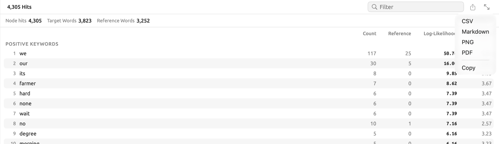

Copy places the table onto the clipboard with tab characters delimiting the column values. The files produced from exporting your query results are discussed more thoroughly in Exporting results in Chapter 16, Query Results and Statistics.
Where exports are available
In the inspector:
| Tab | Place | Formats | Columns of the CSV file |
|---|---|---|---|
| Text | Overview, beside the heading of the Overview section | CSV | Section, Measure, and Value, with every measure of the five sections, then the rows of the three charts |
| Text | Overview, the Parts of speech, Functions, and Phrases charts | PNG, PDF, CSV | Category, Count |
| Text | Bookmarks | CSV | Location, Text, Comment |
| Grammar | Structure, each diagram, and the Diagram window | PNG, PDF | |
| Grammar | Form × Function, the matrix | PNG, PDF, CSV | Form, Total, then one column per function |
| Grammar | Form × Function, the list of a cell | CSV | Sentence, Phrase, Text |
| Grammar | Collocates | CSV | Rank, Collocate, Part of speech, Frequency, Expected, Log-likelihood, MI, MI3, t-score, z-score, Dice, logDice (every score, whichever one ranks the list) |
| Grammar | Word Sketch | PNG, PDF, and CSV for the Map and Web displays; CSV for the List | Relation, Collocate, Lemma, Part of speech, Frequency, logDice |
| Grammar | Discourse | CSV | Category, Sentence, Text, Detail |
| Coding | Codes, beside Code System | CSV | As for the codebook, below |
| Coding | Codings, with Codings chosen | CSV | Code, Location, Start, End, Text |
| Coding | Codings, with Memos chosen | CSV | Code, Location, Text, Memo, Tags |
| Coding | Links | CSV | As for links, below |
| Coding | Code Stats, Code Frequencies & Coverage | PNG, PDF, CSV | Code, Segments, Characters, Coverage (%) |
| Coding | Code Stats, Co-occurrences | CSV | Code, Code, Overlaps, Characters, φ, p |
| Coding | Code Stats, each chart under Attribute Breakdowns | PNG, PDF, CSV | Attribute, Value, Count |
| Coding | Portrait, Mosaic | PNG, PDF | |
| Coding | Portrait, Codeline | CSV | Sentence, Codes, Text |
| Coding | Code Sketch | PNG, PDF, and CSV for the Map; CSV for the List | As for Word Sketch |
| Multimode | Sketch Space | PNG, PDF, and CSV for the Map; CSV for the List | Code or Attribute, then as for Word Sketch |
| Multimode | Query | CSV, Markdown, PNG, PDF, Copy | See Exporting results in Chapter 16, Query Results and Statistics |
Each of these measures has its explanation in the respective chapter and is collected in Chapter 27, Statistics at a Glance.
In the views of the project shelf, for a project, set, or tag:
| View | Place | Formats | Columns of the CSV file |
|---|---|---|---|
| Codebook | The bar below the code list | CSV | Code, Path, Level, Count, Description, Color |
| Codebook | USE IN THIS SCOPE, in the details of a selected code | PNG, PDF, CSV | Document, Segments |
| Codings | Header | CSV | Document, Code, Text, Start, End, then one column per attribute on the codings |
| Memos | Header | CSV | Document, Code, Memo, Tags, Start, End, then one column per attribute on the memos |
| Links | Header | CSV | Source document, Source text, Relation, Target document, Target text, Comment, Tags |
| Code Stats | Header | PNG, PDF, CSV | Code, Segments, Documents, Characters, Coverage (%) |
| Code Stats | Each chart under Attribute Breakdowns | PNG, PDF, CSV | Attribute, Value, Count |
| Code Matrix | Header | PNG, PDF, CSV | Code, then one column per document or group, and Total |
| Relations | Header, with Grid chosen | PNG, PDF, CSV | Code, Segments, then one column per code |
| Relations | Header, with Pairs chosen | CSV | Code, Code, Overlaps, Characters, φ, p |
| Word Sketch | As in the inspector | PNG, PDF, CSV | As in the inspector |
| Dictionaries | Category Frequencies and By Document | PNG, PDF, CSV | See Exporting the counts in Chapter 19, Dictionaries |
| Queries | The results bar | CSV, Markdown, PNG, PDF, Copy | See Exporting results in Chapter 16, Query Results and Statistics |
The same export functionality exists in the Codebook window, the Word Sketch window, Window ▸ Queries, and query results opened in a window of their own. From the Attributes window, Export outputs the attribute table (see Attribute values below).
Both Start and End within exported files indicate the location of a passage as character counts from the beginning of the document’s text. Location specifies which paragraph and sentence number that passage occurs within according to its display on the inspector; therefore, ¶12·3 represents the third sentence of paragraph 12.
Exporting a Code Matrix grouped by an attribute, a group, a language, or a format creates one column for each group, followed by Total and columns for the test used. Its first row indicates the base for each group. Exporting tables and charts in Chapter 13, Analyzing Codes explains what kind of file gets generated by this feature, while Testing the differences between groups explains the meaning of its numbers.
The codebook as CSV
Every code shown in the list appears in the codebook’s CSV file, each on a separate row, followed by its children. These are sorted alphabetically at each level. An excerpt of the beginning of the file for “Climate Debate” follows:
| Code | Path | Level | Count | Description | Color |
|---|---|---|---|---|---|
| Costs | Costs | 1 | 19 | Prices, bills, subsidies and budgets: what climate policy or climate damage costs and where the bill lands. | #4F46E5 |
| Emotions | Emotions | 1 | 6 | Feelings writers express or attribute to others, such as grief, despair, anger or tiredness. | #DB2777 |
| Fear | Emotions / Fear | 2 | 12 | Fear and anxiety about climate change, and arguments about whether fear helps or harms. | #E11D48 |
| Hope | Emotions / Hope | 2 | 11 | Hope and confidence that change is possible, and how writers frame them. | #9333EA |
| Responsibility | Responsibility | 1 | 19 | Who caused the problem, who should act or pay, and what is owed to others, including future generations. | #65A30D |
| Science | Science | 1 | 15 | Appeals to research, measurements, models and experts, and arguments about how science works. | #0D9488 |
- Path concatenates the names of codes from the top level down, separated by slashes, allowing you to distinguish codes with identical names but existing under distinct parent codes.
- Level indicates at which hierarchy level a particular code exists; 1 means a top-level code, 2 means children of those codes, etc.
- Count represents the numeric value shown next to each code in the tree view, which refers to how many times the code has been used within the original documents of the project, set, or tag whose codebook you export. For “Emotions”, it only includes the 6 occurrences of “Emotions” itself, not “Fear” or “Hope”, which each have their own count values (12 and 11 respectively).
The export beside Code System in the Codes facet of the inspector has identical columns. Count here, however, counts the usage within the currently opened document along with coded memos.
Links as CSV
Linking is performed between two passages, usually from different documents (see Links in Chapter 7, Coding). An exported CSV file contains one row for every link:
| Source document | Source text | Relation | Target document | Target text | Comment | Tags |
|---|---|---|---|---|---|---|
| The Models Keep Missing | Clouds alone probably hide more uncertainty than any press release will admit. | contradicts | Heat Wave Report 2024 | This estimate carries a wide margin of uncertainty and should not be cited without it. | The agency states its margin of uncertainty plainly; the column assumes official sources hide it. |
Relation refers to the wording that was entered while creating the link. Tags refers to a list of all tags associated with the link, separated by semicolons; in this case, Tags is blank. Exporting from the Links view of the project shelf will yield all links listed in the project, set, or tag selected. The Links facet of the inspector will export the links of the opened document.
Coded segments and memos
The project shelf view of Codings exports a row for every coding made. Where the values of attributes on codings were recorded, those attributes will become additional columns, blank when a coding does not contain a value.
In comparison, the project shelf view of Memos operates similarly, except here the memo’s text and tags replace coded text. The name of the code of a coded memo becomes part of the Code column in a row, and the column remains blank whenever a non-coded memo contributes to the spreadsheet. The code’s tags get inherited by a coded memo, meaning they fill out the Tags cell in a memo row, while a memo’s own tags can be captured using the Codings facet of the inspector, with Memos chosen. In a project’s Memos view, memos which exist independently of documents receive a row, with the Document column empty.
Attribute values
To open the Attributes window, go to Project ▸ Attributes or, alternatively, right-click on the project and select Attributes. Export will save the table content as displayed, including a Document column and each attribute as its own separate column. Each row represents each document that remains visible through your search, in order of display. Translations share the same row as the original, along with its attribute values.


The file takes the format required by the Import function in the window. If you need to update many values at once, export the table contents, edit the contents in a spreadsheet program, then re-import them (see Importing attribute values from a spreadsheet in Chapter 4, Importing Material).